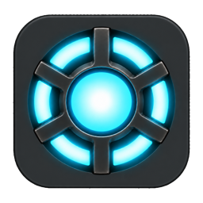

<!doctype html>
<!-- prototype-app-site-headers.md -->
<html lang="zh-CN"><head><meta charset="utf-8"><meta name="viewport" content="width=device-width,initial-scale=1"><title>官网页头 · 回主页面包屑</title><script src="../manifest.js"></script><script src="../app-identity.js"></script><style>
body{margin:0}
/* The review sheet: each app website's first screen, Chinese then English, cut to its header and the top of its hero. */
.sheet{display:grid;gap:20px;padding:20px 0;background:#d5d5d1}
.site-pair{display:grid;gap:8px}
/* overflow:hidden makes the strip its own scroll container, so each site's sticky header stays at the top of its strip. */
.strip{height:330px;overflow:hidden}

/* ── Breadcrumb, shared structure: "aloong planet / <app name>" at the header's far left ── */
.crumbs{display:flex;align-items:center;gap:10px;min-width:0}
.crumbs-up{display:flex;align-items:center;gap:10px}
.crumbs-home{white-space:nowrap}

/* ── Transfer (transfer.aloongplanet.com) ── */
.t-site{--brand:#8a67ab;--brand-tint:#f3eef8;--fg:#1a1626;--fg-muted:#5c5470;--bg:#ffffff;--border:#e7e1ef;--on-brand:#fff;--brand-glow:rgba(138,103,171,.35);font-family:-apple-system,BlinkMacSystemFont,'Segoe UI','PingFang SC','Hiragino Sans GB','Microsoft YaHei',Roboto,Helvetica,Arial,sans-serif;color:var(--fg);background:var(--bg);line-height:1.6;-webkit-font-smoothing:antialiased}
.t-site *{box-sizing:border-box}
.t-site a{color:var(--brand);text-decoration:none}
.t-site a:hover{text-decoration:underline}
.t-site .container{max-width:1080px;margin:0 auto;padding:0 24px}
.t-site .nav{position:sticky;top:0;z-index:50;background:color-mix(in srgb,var(--bg) 82%,transparent);backdrop-filter:saturate(180%) blur(12px);border-bottom:1px solid var(--border)}
.t-site .nav-inner{display:flex;align-items:center;justify-content:space-between;height:60px}
.t-site .brand{display:flex;align-items:center;gap:9px;font-weight:700;font-size:1.1rem;color:var(--fg)}
.t-site .brand:hover{text-decoration:none}
.t-site .nav-links{display:flex;align-items:center;gap:22px}
.t-site .nav-links>a{color:var(--fg-muted);font-size:.95rem}
.t-site .nav-links>a:hover{color:var(--fg);text-decoration:none}
.t-site .lang-switch{border:1px solid var(--border);border-radius:8px;padding:4px 10px;font-size:.85rem !important}
.t-site .crumbs-home,.t-site .crumbs-sep{color:var(--fg-muted);font-size:.95rem}
.t-site .crumbs-home:hover{color:var(--fg);text-decoration:none}
.t-site .hero{padding:48px 0 32px;background:radial-gradient(1200px 500px at 50% -10%,var(--brand-tint),transparent 70%);text-align:center}
.t-site .tagline{display:inline-block;color:var(--brand);font-weight:600;background:var(--brand-tint);border:1px solid var(--border);padding:5px 14px;border-radius:999px;font-size:.9rem;margin:0 0 20px}
.t-site .hero-title{font-size:clamp(1.9rem,5vw,3.2rem);line-height:1.2;letter-spacing:-.01em;max-width:820px;margin:0 auto 18px}
.t-site .hero-sub{font-size:clamp(1rem,2vw,1.2rem);color:var(--fg-muted);max-width:640px;margin:0 auto 28px}
.t-site .hero-cta{display:flex;gap:14px;justify-content:center;flex-wrap:wrap}
.t-site .btn{display:inline-flex;align-items:center;gap:8px;padding:12px 22px;border-radius:10px;font-weight:600;font-size:.98rem;border:1px solid transparent}
.t-site .btn:hover{text-decoration:none;transform:translateY(-1px)}
.t-site .btn-primary{background:var(--brand);color:var(--on-brand);box-shadow:0 6px 16px var(--brand-glow)}
.t-site .btn-ghost{background:transparent;color:var(--fg);border-color:var(--border)}
@media(max-width:720px){.t-site .nav-links{gap:14px}.t-site .nav-links>a:not(.lang-switch){display:none}}

/* ── Agentshed (agentshed.aloongplanet.com) ── */
.a-site{--bg:#f7f8f9;--bg-soft:#f0f1f3;--card:#ffffff;--text:#37352f;--text-2:#787774;--line:#e8eaed;--line-strong:#d9dce0;--accent:#8a67ab;--accent-soft:#f0ebf6;--warn-bg:#fdecdc;--warn-fg:#b3552f;--icon-shadow:0 18px 25px rgba(55,53,47,.18);background:var(--bg);color:var(--text);font:15px/1.6 -apple-system,'PingFang SC','Hiragino Sans',system-ui,sans-serif}
.a-site *{box-sizing:border-box;margin:0}
.a-site a{color:inherit}
.a-site .wrap{max-width:1080px;margin:0 auto;padding:0 24px}
.a-site .site-header{position:sticky;top:0;z-index:20;background:color-mix(in srgb,var(--bg) 88%,transparent);backdrop-filter:blur(10px);border-bottom:1px solid var(--line)}
.a-site .bar{display:flex;align-items:center;gap:22px;height:58px}
.a-site .brand{display:flex;align-items:center;gap:10px;font-weight:700;font-size:16px;text-decoration:none}
.a-site .brand img{width:28px;height:28px;border-radius:7px}
.a-site .nav-links{display:flex;gap:18px;margin-left:auto;font-size:14px;color:var(--text-2)}
.a-site .nav-links a{text-decoration:none}
.a-site .nav-links a:hover{color:var(--accent)}
.a-site .lang{display:inline-flex;border:1px solid var(--line-strong);border-radius:8px;overflow:hidden}
.a-site .lang a{font-size:13px;padding:4px 10px;text-decoration:none;color:var(--text-2)}
.a-site .lang a:hover{color:var(--text);background:var(--bg-soft)}
.a-site .lang a.on{background:var(--accent-soft);color:var(--accent);font-weight:600}
.a-site .crumbs-home,.a-site .crumbs-sep{color:var(--text-2);font-size:14px}
.a-site .crumbs-home{text-decoration:none}
.a-site .crumbs-home:hover{color:var(--accent)}
.a-site .hero{padding-block:72px 40px;text-align:center}
.a-site .hero .icon{width:112px;height:112px;filter:drop-shadow(var(--icon-shadow))}
.a-site .hero h1{font-size:44px;line-height:1.15;margin:22px 0 12px;letter-spacing:-.01em}
.a-site .hero .lede{font-size:18px;color:var(--text-2);max-width:720px;margin:0 auto 28px}
.a-site .cta{display:flex;flex-direction:column;align-items:center;gap:10px}
.a-site .btn{display:inline-flex;align-items:center;gap:8px;font:inherit;font-weight:600;border-radius:10px;padding:12px 22px;text-decoration:none;border:1px solid transparent;white-space:nowrap}
.a-site .btn-primary{background:var(--accent);color:var(--card)}
.a-site .cta .meta{font-size:13px;color:var(--text-2)}
.a-site .pill{display:inline-block;font-size:12px;font-weight:700;border-radius:999px;padding:2px 9px;background:var(--warn-bg);color:var(--warn-fg);vertical-align:middle}
.a-site .cta .beta-note{font-size:13px;color:var(--warn-fg);max-width:520px}
@media(max-width:760px){.a-site .hero h1{font-size:32px}.a-site .nav-links{display:none}.a-site .lang{margin-left:auto}}

/* ── JustSnap (justsnap.aloongplanet.com) ── */
.j-site{--window:#f1f3f6;--surface:#ffffff;--text:#202329;--muted:#646b75;--line:#dfe2e7;--hover:#e8ecf1;--soft:#dce6f5;--accent:#1553b2;--on-accent:#ffffff;--shadow:rgba(32,35,41,.16);--header:rgba(241,243,246,.86);--shot-ground:#e9edf3;background:var(--window);color:var(--text);font:16px/1.6 -apple-system,BlinkMacSystemFont,'Segoe UI','PingFang SC','Hiragino Sans GB',sans-serif}
.j-site *{box-sizing:border-box}
.j-site a{color:inherit;text-decoration:none}
.j-site .wrap{max-width:1280px;margin:0 auto;padding:0 24px}
.j-site .hdr{position:sticky;top:0;z-index:20;height:56px;background:var(--header);backdrop-filter:blur(10px);border-bottom:1px solid var(--line)}
.j-site .hdr .wrap{height:100%;display:flex;align-items:center;gap:28px}
.j-site .brand{font-weight:700;font-size:18px;letter-spacing:-.01em}
.j-site .nav{display:flex;gap:22px;margin-left:auto;font-size:14px;color:var(--muted)}
.j-site .nav a:hover{color:var(--text)}
.j-site .lang{display:flex;border:1px solid var(--line);border-radius:8px;overflow:hidden;font-size:13px}
.j-site .lang a,.j-site .lang span{padding:4px 10px;color:var(--muted)}
.j-site .lang a:hover{background:var(--hover);color:var(--text)}
.j-site .lang .cur{background:var(--soft);color:var(--text);font-weight:600}
.j-site .crumbs-home,.j-site .crumbs-sep{color:var(--muted);font-size:14px}
.j-site .crumbs-home:hover{color:var(--text)}
.j-site .nav a:focus-visible,.j-site .lang a:focus-visible,.j-site .brand:focus-visible,.j-site .crumbs-home:focus-visible{outline:2px solid var(--accent);outline-offset:2px}
.j-site .hero{display:flex;align-items:center;padding:48px 0 32px}
.j-site .hero .wrap{width:100%;display:grid;grid-template-columns:minmax(0,.8fr) minmax(0,1.3fr);gap:48px;align-items:center}
.j-site .hero h1{font-size:clamp(30px,4.2vw,46px);line-height:1.15;margin:0 0 18px;letter-spacing:-.02em}
.j-site .hero p.lead{font-size:17px;margin:0 0 28px;max-width:34em}
.j-site .dl{display:flex;flex-direction:column;align-items:flex-start;gap:12px}
.j-site .dl .meta{display:flex;flex-wrap:wrap;align-items:center;gap:6px 14px;font-size:13px;color:var(--muted)}
.j-site .more{color:var(--accent);font-size:13px}
.j-site .btn{display:inline-flex;align-items:center;justify-content:center;gap:8px;height:44px;padding:0 20px;border-radius:10px;font-weight:600;font-size:15px;border:1px solid var(--accent);background:var(--accent);color:var(--on-accent)}
.j-site .btn svg{width:18px;height:18px;flex:none}
.j-site .shot{width:100%;aspect-ratio:16/9;justify-self:end;background:var(--shot-ground);border:1px solid var(--line);border-radius:14px;box-shadow:0 18px 50px -20px var(--shadow)}
@media(max-width:900px){.j-site .hero .wrap{grid-template-columns:minmax(0,1fr);gap:32px}}
@media(width<760px){.j-site .nav{display:none}.j-site .lang{margin-left:auto}}

/* Narrow phones: on one line beside the language toggle the breadcrumb no longer fits (at 390px JustSnap's Chinese header
   lacked 2px and Agentshed's had none to spare; at 401px both keep their gap), so "aloong planet /" goes small above the
   app name, inside the same header height. */
@media(max-width:400px){
.crumbs{flex-direction:column;align-items:flex-start;gap:1px}
.crumbs-up{gap:4px}
.t-site .crumbs-home,.t-site .crumbs-sep,.a-site .crumbs-home,.a-site .crumbs-sep,.j-site .crumbs-home,.j-site .crumbs-sep{font-size:11px;line-height:1.3}
}
</style></head><body><div class="sheet" id="sheet"></div>
<script>
// The product's copy, per site and language, as on each live website.
const HOME='href="https://aloongplanet.com/" data-goto="homepage/home" data-goto-href="../homepage/prototype-home.html"';
const DL='<svg width="18" height="18" viewBox="0 0 24 24" fill="none" stroke="currentColor" stroke-width="2" stroke-linecap="round" stroke-linejoin="round" aria-hidden="true"><path d="M12 15V3"></path><path d="M21 15v4a2 2 0 0 1-2 2H5a2 2 0 0 1-2-2v-4"></path><path d="m7 10 5 5 5-5"></path></svg>';
// The breadcrumb: the homepage link and its separator, then the app's existing brand link unchanged.
const crumbs=brand=>`<div class="crumbs"><span class="crumbs-up"><a class="crumbs-home" ${HOME}>aloong planet</a><span class="crumbs-sep" aria-hidden="true">/</span></span>${brand}</div>`;
const SITES={
  transfer:{cls:'t-site',copy:{
    zh:{lang:'zh-CN',nav:['功能','工作原理','下载','GitHub'],sw:'EN',tag:'局域网互传，简单到像聊天',title:'文件 · 文本 · 截图，一键发给同网络的另一台电脑',sub:'同一个 Wi-Fi 下的两台电脑，打开就自动发现彼此。无服务器、无账号、无云——数据只在局域网里走。',cta:['免费下载','在 GitHub 查看']},
    en:{lang:'en',nav:['Features','How it works','Download','GitHub'],sw:'中文',tag:'LAN transfer, as simple as chatting',title:'Send files, text &amp; screenshots to another computer on your network in one click',sub:'Two computers on the same Wi-Fi discover each other automatically. No server, no account, no cloud — data stays within the local network.',cta:['Download free','View on GitHub']}},
    render:c=>`<header class="nav"><div class="container nav-inner">${crumbs('<a href="#" class="brand"><span>Transfer</span></a>')}<nav class="nav-links">${c.nav.map(n=>`<a href="#">${n}</a>`).join('')}<a href="#" class="lang-switch">${c.sw}</a></nav></div></header><section class="hero"><div class="container"><p class="tagline">${c.tag}</p><h1 class="hero-title">${c.title}</h1><p class="hero-sub">${c.sub}</p><div class="hero-cta"><a href="#" class="btn btn-primary">${c.cta[0]}</a><a href="#" class="btn btn-ghost">${c.cta[1]}</a></div></div></section>`},
  agentshed:{cls:'a-site',copy:{
    zh:{lang:'zh-CN',nav:['功能','安装','下载','GitHub'],cur:'zh',title:'你的 coding agent，尽收眼底',lede:'一处看清 Claude Code、Codex 等 coding agent 在每个项目里装了哪些 skills、plugins 与 MCP，记住了什么，烧了多少 token；每次会话按提问回看，所有项目一起搜索；还能把全局 skill 装进任意项目。',btn:'下载测试版 0.1.0-beta.9',pill:'测试版',meta:'macOS 12 及以上 · Apple Silicon',note:'正式版尚未发布。测试版从 GitHub 下载，可能还有不稳定之处。'},
    en:{lang:'en',nav:['Features','Install','Download','GitHub'],cur:'en',title:'Your coding agents, in full view',lede:'See, across every project, which skills, plugins and MCP servers Claude Code, Codex and other coding agents have installed, what they remember and how many tokens they burned; revisit every session question by question, search what you asked across all of them, and install skills from your global library into any project.',btn:'Download pre-release version 0.1.0-beta.9',pill:'Pre-release version',meta:'macOS 12 or later · Apple Silicon',note:'No stable release yet. The pre-release version downloads from GitHub and may still be rough in places.'}},
    render:c=>`<header class="site-header"><div class="wrap bar">${crumbs('<a class="brand" href="#"><span>Agentshed</span></a>')}<nav class="nav-links">${c.nav.map(n=>`<a href="#">${n}</a>`).join('')}</nav><span class="lang"><a href="#"${c.cur==='zh'?' class="on"':''}>中文</a><a href="#"${c.cur==='en'?' class="on"':''}>EN</a></span></div></header><div class="hero wrap"><h1>${c.title}</h1><p class="lede">${c.lede}</p><div class="cta"><a class="btn btn-primary" href="#">${DL}${c.btn}</a><div class="meta"><span class="pill">${c.pill}</span> ${c.meta}</div><div class="beta-note">${c.note}</div></div></div>`},
  justsnap:{cls:'j-site',copy:{
    zh:{lang:'zh-Hans',brand:'随译 JustSnap',nav:['功能','下载与安装','GitHub'],cur:'zh',title:'截一块屏幕，直接提取文字或翻译',lead:'随译（JustSnap）是 macOS 菜单栏里的截图工具：框选任意区域，几秒内拿到提取的文字或译文。用你自己的模型服务商。',btn:'下载随译 0.2.0',meta:'macOS 14.4 或更高 · Apple 芯片',more:'在 GitHub 查看所有版本'},
    en:{lang:'en',brand:'JustSnap',nav:['Features','Download','GitHub'],cur:'en',title:'Snap any part of your screen. Get the text or the translation.',lead:'JustSnap lives in your Mac\'s menu bar. Select any region, and seconds later a vision model hands back the text or the translation. Bring your own provider.',btn:'Download JustSnap 0.2.0',meta:'macOS 14.4 or later · Apple silicon',more:'See every version on GitHub'}},
    render:c=>`<header class="hdr"><div class="wrap">${crumbs(`<a class="brand" href="#">${c.brand}</a>`)}<nav class="nav">${c.nav.map(n=>`<a href="#">${n}</a>`).join('')}</nav><span class="lang">${c.cur==='zh'?'<span class="cur">中文</span><a href="#">EN</a>':'<a href="#">中文</a><span class="cur">EN</span>'}</span></div></header><section class="hero"><div class="wrap"><div><h1>${c.title}</h1><p class="lead">${c.lead}</p><div class="dl"><a class="btn" href="#">${DL}${c.btn}</a><div class="meta"><span>${c.meta}</span><a class="more" href="#">${c.more}</a></div></div></div><div class="shot"></div></div></section>`}
};
document.getElementById('sheet').innerHTML=Object.entries(SITES).map(([id,s])=>`<section class="site-pair" id="${id}">${['zh','en'].map(l=>`<div class="strip ${s.cls}" lang="${s.copy[l].lang}">${s.render(s.copy[l])}</div>`).join('')}</section>`).join('');
// Links drawn as "#" lead nowhere in this prototype.
document.addEventListener('click',e=>{if(e.target.closest('a[href="#"]'))e.preventDefault();});
</script>
<script>document.addEventListener('click',e=>{const el=e.target.closest('[data-goto]');if(!el)return;e.preventDefault();if(window.parent!==window)parent.postMessage({type:'proto-nav',target:el.dataset.goto},'*');else location.href=el.dataset.gotoHref;});</script>
</body></html>
